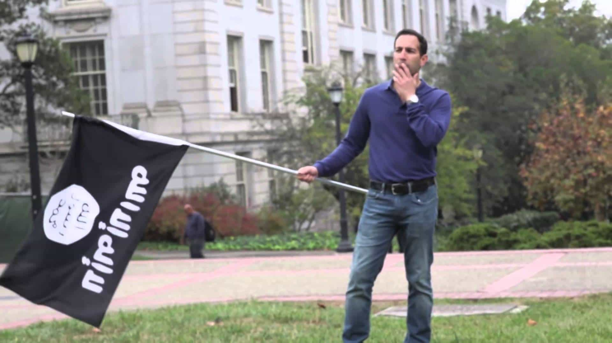

< < < Back
Future Leaders Of America Call For Abolishing Freedom Of Speech And The Press – Return Of Kings
The very convincing US satirist Ami Horowitz has gotten dozens of Yale University students to support his petition to stop free speech by repealing the First Amendment of the US Constitution. Horowitz has a history of outing some very sad college hypocrisies, such as when students at UC Berkeley, obsessed with rooting out the real evils of mansplaining and manspreading, reacted indifferently to him waving an ISIS flag on campus. They resorted to attacking him for waving an Israeli flag that same day.
His latest experiment portends very badly for college campuses already clamping down on free speech, even with the current constitutional protections of the First Amendment. Focused on their pet projects of avoiding microaggressions and erecting an ideological missile defense shield of trigger warnings, the Yale students signing the petition seemed to forget that the First Amendment also protects both freedom of religion and the press.
For political rookies, this includes the ability of Jezebel and Feministing to publish articles, however retrograde, and the safety of Muslims in practicing their religion. No matter. I’m sure the Yale crowd had the best of intentions.
Is anyone sounding the alarm bells yet?

Horowitz was ignored at UC Berkeley when he waved an ISIS flag and accosted when he waved an Israeli one.
I’m happy to be corrected (more than happy), but I see Hillary Clinton winning the 2016 and probably 2020 elections. If she serves two terms, this means that from 1988 to 2024, 28 out of 36 years will have seen an American President who went to Yale for at least part of their education. The other eight years will have witnessed a President (Obama) whose university education culminated in him going to Harvard, a school about as different to Yale as Heineken is to Becks.
The political environment in which George W. Bush, Bill Clinton, Hillary Clinton, and George H. W. Bush (the latter in particular) went to Yale was nowhere close to as radical as it is today. So if the distant past can produce a woeful Hillary Clinton, what ideological filth will classes graduating in the 2010s spawn?
Some of my previous work has exposed you to the student charges now trying to overthrow their ideological parents and grandparents, such as the Harvard activists labeling liberal academics like Alan Dershowitz as rape apologists. Why? The professors had the gall to suggest that disciplinary procedures for “sexual assault” should resemble courts more than 1930s Stalinist show trials when it comes to evidentiary standards and due process. This reverse filial cannibalism is showing no signs of abating, to the utter delight of SJWs.
In trying to end free speech protections, what SJWs really have in mind is the criminalization of any speech which does not accord with their viewpoints. So they get rid of the First Amendment (pretend for a moment it happens). What next? Well, criticism of Black Lives Matter, even their most violent antics, becomes criminal hate speech.
So, too, does pointing out the continent-sized holes in theories of male “privilege” and the “oppression” of females (under the umbrella of a new offense called “reinforcing the patriarchy”). Using the comments section below, feel free to share your own predictions about what new thoughtcrimes would emerge when SJWs soil the Constitution.
A wider case of mass censorship
Jack Dorsey says that Twitter is about free speech, yet meets BLM “leaders” at the same time he oversees a clampdown on accounts disseminating unfavored views.
Note the paucity of mainstream outlets which covered this anti-free speech debacle at Yale. As far as I can tell, CNN did not, nor did USA Today, The New York Times, or The Washington Post. Yet so many mainstream journalists and commentators covered the farce at Mizzou, for example, usually giving the protesters laudatory coverage, including the praise showered on car hit-hoaxer and privileged rich kid Jonathan Butler.
The issue with media bias is arguably much more about the refusal to cover certain stories, rather than the admittedly very extensive partisanship found in pieces actually written. Twitter has already committed itself to making its platform “safe,” exemplified in the utter obsequiousness of founder Jack Dorsey when he met the “leaders” of the Black Lives Matter scam and stuck his proverbial middle finger at anyone who criticizes it.
This is despite Dorsey claiming that Twitter “stands for freedom of expression.” Expect in the coming year or so that Twitter, Facebook, Youtube, and Reddit will all double down in restricting a wide range of views and ideological clusters deemed “unacceptable,” using more or less the same reasoning as the petition signers at Yale.
The next few decades might be very, very bad
Obligatory George Soros photo in section describing overarching media and SJW machinations.
Here at ROK we see some very positive signs within populations in the US, Europe, and elsewhere. Signs of fighting back, throwing up the standard media narrative, and taking to the streets to show disgust at political elites. Nevertheless, the fascistic efforts of vested interests are by no means slowing down.
What matters right now is that we remain ceaseless in cataloging both examples like the Yale anti-free speech bigotry and the compliance of the media in not reporting incidents like it. The advent of YouTube and other mediums has paradoxically opened up a whole new world for exposing the mendacious intentions of the SJW crowd and their powerful enablers.
Read More: Yale Students Throw Temper Tantrum Over “Offensive” Email